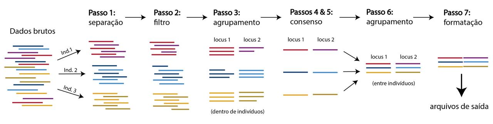

Mãos na Massa 🍝
Como mencionado na nossa sessão teórica mais cedo, a comunicação com um Núcleo de Computação de Alto Desempenho como o NPAD/UFRN se dá através de comandos simples dentro do ambiente Bash executados no terminal. Vamos aqui passar por alguns desses comandos e entender como podemos usá-los em conjunto para criamos frases (linhas de comando) para executar tarefas levemente mais complexas.
1. Introdução ao Ambiente UNIX
Como é comum no aprendizado de uma nova linguagem, é fundamental conhecer bem o alfabeto em questão antes de se tentar escrever as primeiras sentenças. Abaixo estão listados alguns comandos bastante ultilizados no dentro do ambiente Bash e alguns exemplos de como podemos os usar em conjunto:
#Indica que a linha é uma linha de comentário, portanto não lida.
~O diterório raiz do sistema.
.O presente diretório.
..Um diretório atrás do presente diretório.
mkdirCria um novo diretório.
tabCompleta o nome do diretório ou ficheiro que está presente dentro de um dado diretório.
cdEntra em um diretório.
lsLista todos os componentes de um dado diretório.
pwdImprime o caminho completo do diretório atual.
rmRemove um ficheiro.
;Passa para o próximo comando.
Usando algumas das palavras acima, poderíamos escrever um comando dizendo Crie uma pasta chamada MyFolder:
mkdir MyFolderPodemos checar que essa pasta foi realmente criada do modo desejado:
lsPodemos também entrar nessa pasta criada:
cd MyFolderPodemos sair desse diretório e voltar ao diretório original:
cd ..Por fim, podemos deletar a pasta criada:
rm -rf MyFolderPodemos também fazer mais de um passo de uma só vez colocando comandos distintos em uma mesma linha:
mkdir MyFolder; cd MyFolder; pwdMais alguns comandos:
nanoCria um arquivo de texto.
gzipComprime um arquivo.
catAbre na tela (ecrã) um arquivo de texto.
zcatAbre na tela (ecrã) um arquivo de texto compactado.
headVer o começo de um arquivo de texto.
>Salva o que seria mostrado na tela (ecrã) em um ficheiro.
|Passa o que foi processado para o próximo comando.
Então, podemos criar um arquivo de texto chamado Hello_10.txt com o comando abaixo. Escreva Hello! em 10 linhas seguidas e aperte control + o para salvar e depois Enter. Depois, aperte control + x para sair do programa.
nano Hello_10.txtLembre-se que podemos confirmar que o arquivo foi realmete criado:
lsAqui só temos 10 linhas, mas às vezes queremos ver apenas as primeiras linhas de um arquivo de milhões e milhões de linhas! Digamos que queremos ver as 5 primeiras linhas do nosso arquivo Hello_10.txt:
head -n 5 freadPodemos também criar um subarquivo com essas 5 primeiras linhas do Hello_10.txt:
head -n 5 Hello_10.txt > Hello_05.txtPodemos também comprimir um arquivo:
gzip Hello_05.txtVamos agora precisar de dois comandos para fazer um novo subarquivo porque arquivos comprimidos precisam de um tratamento especial:
zcat Hello_05.txt.gz | head -n 3 > Hello_03.txtPequenas Dicas (UNIX)
⬆️Você pode ver comandos usados anteriormente apertando a seta para cima no teclado.
control + aMove o cursor para o começo da linha.
control + eMove o cursor para o final da linha.
control + kApaga do cursor até o final da linha.
control + rPermite pesquisar por um comando já usado anteriormente.
2. Sistema de Filas de Trabalho
Como vários usuários estarão fazendo uso de um Núcleo de Computação de Alto Desempenho, e mesmo o maior supercomputador do planeta tem lá os seus limites em relação aos recursos (armazenamento, memória e processamento), esses núcleos empregam um sistema de filas de submissão de trabalho que são controladas por programas especializados. No caso do nosso NPAD/UFRN, o programa usado é o Slurm Workload Manager, ou mais simplesmente Slurm. Portanto, precisamos submeter o nosso trabalho ao NPAD/UFRN deixando bem claro quais recursos esse trabalho irá precisar para que assim o Slurm possa organizar todas as submissões e montar uma fila de espera que garanta que todos os trabalhos serão executados sem problemas — sempre garantindo que os recursos solicitados por cada trabalho estarão disponíveis. Essa submissão é feita por meio de um ficheiro .sh que possui a seguinte estrutura:
#!/bin/bash
#SBATCH --partition=intel-128 # Partição
#SBATCH --cpus-per-task=8 # CPUs solicitados
#SBATCH --hint=compute_bound # Um processador por core
#SBATCH --mail-type=ALL # Quando um e-mail deve ser enviado?
#SBATCH --mail-user= # Qual e-mail deve ser usado?
#SBATCH --time=0-1:0 # Formato padrão: Dias-Horas:Minutos
# Paralelização (OpenMP) parametros:
export OMP_NUM_THREADS=$SLURM_CPUS_PER_TASK
export OMP_PROC_BIND=true
# Rode abaixo o seu comando:
conda activate /home/sbbe26/conda/ipyrad
ipyrad -p params-iptest.txt -s 1
Digamos que o conteúdo acima estivesse salvo em um ficheiro chamado MyFirstSubmission.sh. Poderíamos então submeter esse trabalho com o comando abaixo:
sbatch MyFirstSubmission.shIsso feito, poderíamos relexar porque o programa Slurm irá encontrar o momento mais oportuno para lançar o nosso trabalho! 🥳
Pequenas Dicas (Slurm)
squeue -p intel-128Mostra todos os trabalhos sumetidos à partição intel-128.
scancel ID-OF-THE-JOBCancela uma dada submissão.
squeue -p intel-128 -u USER-NAMEMostra todos os trabalhos sumetidos à partição intel-128 por um dado usuário.
3. Fazer. Refazer. Desfazer. Fazer Novamente. SALVAR TUDO! 🚨
No trabalho com dados genômicos sempre rodamos as análise infindáveis vezes com parâmetros diferentes e geramos inúmeras versões dos gráficos apresentados fazendo uso de scripts levemente modificados. Assim, é de suma impotância que tenhamos um ótimo controle dessas diferentes versões. Isso é geralmente conseguido usando-se um bom Sistema de Controle de Versões, que garante que tenhamos total controle de todas as versões envolvidas. O GitHub é a plataforma de hospedagem de códigos e arquivos mais comumente utilizada na área científica, e faz do Git — um amplo sistema de controle de versões. Portanto, iremos agora passar por uma breve introdução à rotina de trabalho com o essa importante ferramente de trabalho.
3.1. Criando Uma Conta no GitHub
Caso você ainda não tenha uma conta no GitHub, você pode criar uma de forma gratuita aqui usando o caminho que você achar melhor.
3.2. Criando Um Novo Repositório
Os códigos armazenados no GitHub são hospedados dentro de repositórios destinados a projetos específicos, e esses repositórios podem ser públicos ou privados. Assim, precisamos agora criar um novo repositório, o que pode ser feito aqui segundo esses parâmetros (não é preciso se preocupar com as demais opções):
Repository NameEscolha um nome que faça sentido não somente para você, mas também para outras pessoas que venham a visitar o seu repositório.
DescriptionAdicione uma pequena descrição do seu repositório. Mais uma vez, lembre-se que é bom ter uma descrição que seja de fácil entendimento por parte de possíveis visitantes.
3.3. Gerando uma chave SSH pública no NPAD/UFRN
Você agora pode conectar a sua conta no NPAD/UFRN ao seu GitHub também através de uma Chave Pública tipo RSA. Para isso, primeiro crie uma chave na sua conta no NPAD/UFRN usando o comando abaixo. Você deverá digitar uma senha para a sua chave, apertar Enter e depois repetir a mesma senha e apertar Enter outra vez. Isso feito, a sua chave terá sido criada. ⚠️ Atenção! É importante que você se lembre da sua senha depois — guarde-a com sabedoria!
ssh-keygen -t ed25519 -C "COLOQUE-AQUI-O-EMAIL-CADASTRADO-NO-GITHUB" -f ~/.ssh/MyNPAD-MyGitHubAbra a chave criada com o comando abaixo e copie todo o seu contúdo:
cat ~/.ssh/MyNPAD-MyGitHub.pubVocê deve registrar o a chave criada aqui usando os seguintes parâmetros:
TitleEscolha um nome que faça sentido para você e que possa ser fácil de você lembrar no futuro.
KeyCole aqui todo o conteúdo da chave criada.
Por fim, você pode fazer com que o NPAD/UFRN sempre use essa chave. Para isso, abra o ficheiro ~/.ssh/config com o programa nano com o seguinte comando:
nano ~/.ssh/configE nele cole as linhas abaixo (lembre-se que para sair do nano você deve fazer control + o, apertar Enter e então control + x):
Host github.com
HostName github.com
User git
IdentityFile ~/.ssh/MyNPAD-MyGitHub3.4. NPAD/UFRN <-> GitHub — Uma Conexão Necessária
Só resta a você configurar a sua conta no NPAD/UFRN de forma tal que ela sempre use a sua conta no GitHub. Isso pode ser feito com o comando abaixo fazendo uso.
git config --global user.name GITHUB-USERNAME; git config --global user.email EMAIL-CADASTRADO-NO-GITHUBPronto! Agora você tem repositório criado e tudo configurado no NPAD/UFRN. Assim, agora você pode conectar esse repositório a um diretório específico. Portanto, você pode criar um novo diretório e entrar nele:
mkdir MyFirstRepository; cd MyFirstRepositoryEntão, você agora pode fazer com que esse diretório seja capaz de ser conectato a um repositório:
git init -b mainDaí você pode fazer a conexão de fato adicionando ao comando abaixo o seu nome de usuário no GitHub e o nome do repositório em questão:
git remote add origin git@github.com:SEU-USERNAME-NO-GITHUB/NOME-DO-SEU-REPOSITÓRIO.gitVocê pode criar o seu primeiro ficheiro dentro do seu repositório. Vamos aproveitar essa oportunidade para criar um arquivo especial dentro do sistema do GitHub — o ficheiro README.md. Você pode criá-lo com o comando abaixo. Lembre-se que você deve apertar control + o seguido do Enter para salvar, e depois control + x para sair do programa nano.
nano README.mdTendo adicionado o primeiro ficheiro, agora você pode submeter ao GitHub as mudança feita localmente no nosso repositório. Primeiro, temos que adicionar as mudanças:
git add .Então você pode adicionar uma nota (commit) a ser vinculada à mudança em questão:
git commit -m "COLOQUE-AQUI-UM-COMENTÁRIO-QUE-FAÇA-SENTIDO"Finalmente, você pode enviar ao seu repositório as mudanças e no mesmo segundo o seu repositório será atualizado no GitHub!
git push -u origin main4. Processamento de Dados de Representação Reduzida do Genoma (RADseq):
4.1. Tutorial Ipyrad
O Ipyrad é numa pipeline de análises desenvolvidas em Python para processar e analisar dados gerados por técnicas de representação reduzida do genoma, como RAD-seq e GBS. Essas técnicas utilizam enzimas de restrição para cortar o DNA em sítios específicos e sequênciar pequenos fragmentos adjacentes a esses sítios de restrição, permitindo a amostragem de apenas uma pequena fração do genoma de muitos indivíduos. Durante o preparo das bibliotecas genômicas em laboratório, cada amostra recebe um adaptador contendo uma sequência única de nucleotídeos, como um "código de barra molecular" (barcode), que permite combinar múltiplas amostras em uma mesma biblioteca para sequênciamento simultâneo em plataformas de sequênciamento de nova geração, como a Illumina por exemplo. A principal função do Ipyrad é identificar sequências homólogas em diferentes indivíduos (ou seja, correspondentes à mesma região genômica) e construir matrizes de dados genéticos que serão utilizadas em análises posteriores. Essas matrizes podem conter alinhamentos completos para cada locus (variando entre 50–300 bp dependendo do sequênciador utilizado) ou apenas os sítios polimórficos (SNPs, do inglês Single Nucleotide Polymorphisms).
Existem diversos programas disponíveis para processar dados de RAD-seq. Neste tutorial, utilizaremos o ipyrad devido à sua flexibilidade e capacidade de gerar arquivos de saída compatíveis com diversos programas comumente utilizados em estudos filogenéticos, filogeográficos, ou de genômica populacional. Além disso, você não precisa aprender a programar no Python para utilizá-lo, basta entender como usar seus comandos. Você pode aprender mais sobre o Ipyrad aqui.
Referência do programa:
Eaton DAR, Overcast I. 2020. Ipyrad: Interactive assembly and analysis of RADseq datasets. Bioinformatics, 36(8): 2592–2594. doi.org/10.1093/bioinformatics/btz966.
4.2. Os 7 passos básicos da pipeline Ipyrad
De forma bem ampla, o que o ipyrad faz é processar as leituras brutas geradas pelo sequênciador de nova geração em arquivos de saída pré-formatados para análises posteriores. Os principais passos da pipeline são:

Passo 1.Separação das sequências da biblioteca genômica por indivíduo via barcode.
Passo 2.Controle de qualidade e filtragem inicial das leituras brutas.
Passo 3.Agrupamento de sequências em loci dentro de cada indivíduo.
Passo 4.Estimativa de heterozigosidade e taxa de erro de sequênciamento.
Passo 5.Construção das sequências consenso para cada locus com filtro de qualidade.
Passo 6.Identificação de loci homólogos entre os indivíduos e alinhamento.
Passo 7.Filtragem final, formatação e geração dos arquivos de saída.
4.3. Conectando-se ao Núcleo Computacional NPAD/UFRN
Copie e cole o comando abaixo no terminal do seu computador. Não esqueça de substituir COLOQUE-AQUI-O-SEU-USUÁRIO pelo seu nome de usuário. Em seguida, digite a senha associada a sua chave SSH cadastrada no NPAD/UFRN.
ssh -p 4422 -i ~/.ssh_SSBE26/ID_NPAD COLOQUE-AQUI-O-SEU-USUÁRIO@sc2.npad.ufrn.brAgora, vamos criar uma pasta para esse projeto chamada tutorial_ipyrad, vamos entrar nessa pasta e ativar o ambiente Conda no qual o ipyrad foi previamente instalado para esse curso. Copie a linha de comandos abaixo no seu terminal:
mkdir tutorial_ipyrad; cd tutorial_ipyrad; conda activate /home/sbbe26/conda/ipyradO Conda é um sistema de gerenciamento de pacotes de código aberto que facilita a instalação de múltiplas versões de programas com todas as suas dependências em diferentes ambientes. Ele funciona em Linux, macOS e Windows e foi desenvolvido originalmente para programas em Python, mas atualmente pode empacotar e distribuir qualquer tipo de software.
4.4. Obtendo os ficheiros de trabalho
Copie a linha de comandos abaixo para baixar os dados e descompactá-los. ⚠️ Atenção! O comando curl acima utiliza a letra O maiúscula, e não o número zero.
curl -LkO https://eaton-lab.org/data/ipsimdata.tar.gz; tar -xvzf ipsimdata.tar.gzVamos dar uma espiada no arquivo de entrada (biblioteca RAD-seq) que vamos usar nesse tutorial com o comando abaixo. Observe que utilizamos dois comandos acima separados por uma pipe |, que permite que o resultado do primeiro comando seja utilizado como entrada para o segundo comando.
gunzip –c:Descompacta o arquivo e imprimir seu conteúdo na tela.
head –n 12:exibe apenas as primeiras 12 linhas do arquivo FASTQ.
gunzip -c ./ipsimdata/rad_example_R1_.fastq.gz | head -n 12O que estamos observando são as 3 primeiras leituras (reads) do arquivo. Em arquivos FASTQ, que armazenam os dados brutos gerados por sequênciadores de nova geração, cada leitura é representada por 4 linhas. A primeira linha, iniciada pelo símbolo @, contém o identificador da leitura e informações de onde e como ela foi gerada. A segunda linha corresponde à sequência de DNA propriamente dita. A terceira linha contém apenas o separador +. E a quarta linha indica a qualidade de cada base da sequência acima codificada por símbolos, números ou letras que representam valores de qualidade Phred. Esse valores Phred indicam a confiança do sequênciador na identificação de cada base (variando entre 0 e 40): quanto maior o score Phred, menor a probabilidade de erro. Todas as bases mostradas apresentam a letra B, o que corresponde a um Phred score de 33, e uma probabilidade de erro de ~0.0005, ou seja todas as bases apresentam alta qualidade. Esse padrão uniforme de qualidade não é esperado em dados reais, porém isso acontece aqui por se tratar de dados que foram simulados para esse tutorial.
Agora, vamos dar uma olhada no arquivo de barcodes:
cat ./ipsimdata/rad_example_barcodes.txtEsse arquivo de texto deve conter as informações de todos os indivíduos presentes na biblioteca de sequênciamento. Cada linha representa um indivíduo e inclui seu identificador, seguido por uma tabulação (tab) e pela sequência única de nucleotídeos (barcode) adicionada durante a preparação dessa biblioteca em laboratório. O ipyrad identifica esses barcodes nas leituras para atribuir cada sequência ao indivíduo correto.
4.5. Rodando o ipyrad (--help)
Copie o comando do ipyrad abaixo no seu terminal:
ipyrad -hEsse comando pode levar alguns instantes para executar (até um minuto). Isso é normal, não se desespere! Em seguida, você verá a seguinte mensagem de ajuda com a descrição de todos os argumentos usandos pelo comando ipyrad que excuta o programa. Preste atenção especial nos argumentos -n, -p, -s, -c, -r.
usage: ipyrad [-h] [-v] [-r] [-f] [-q] [-d] [-n NEW] [-p PARAMS] [-s STEPS] [-b [BRANCH ...]] [-m [MERGE ...]] [-c cores]
[-t threading] [--MPI] [--ipcluster [IPCLUSTER]] [--download [DOWNLOAD ...]]
options:
-h, --help show this help message and exit
-v, --version show program's version number and exit
-r, --results show results summary for Assembly in params.txt and exit
-f, --force force overwrite of existing data
-q, --quiet do not print to stderror or stdout.
-d, --debug print lots more info to ipyrad_log.txt.
-n NEW create new file 'params-{new}.txt' in current directory
-p PARAMS path to params file for Assembly: params-{assembly_name}.txt
-s STEPS Set of assembly steps to run, e.g., -s 123
-b [BRANCH ...] create new branch of Assembly as params-{branch}.txt, and can be used to drop samples from Assembly.
-m [MERGE ...] merge multiple Assemblies into one joint Assembly, and can be used to merge Samples into one Sample.
-c cores number of CPU cores to use (Default=0=All)
-t threading tune threading of multi-threaded binaries (Default=2)
--MPI connect to parallel CPUs across multiple nodes
--ipcluster [IPCLUSTER]
connect to running ipcluster, enter profile name or profile='default'
--download [DOWNLOAD ...]
download fastq files by accession (e.g., SRP or SRR)
* Example command-line usage:
ipyrad -n data ## create new file called params-data.txt
ipyrad -p params-data.txt -s 123 ## run only steps 1-3 of assembly.
ipyrad -p params-data.txt -s 3 -f ## run step 3, overwrite existing data.
* HPC parallelization across 32 cores
ipyrad -p params-data.txt -s 3 -c 32 --MPI
* Print results summary
ipyrad -p params-data.txt -r
* Branch/Merging Assemblies
ipyrad -p params-data.txt -b newdata
ipyrad -m newdata params-1.txt params-2.txt [params-3.txt, ...]
* Subsample taxa during branching
ipyrad -p params-data.txt -b newdata taxaKeepList.txt
* Download sequence data from SRA into directory 'sra-fastqs/'
ipyrad --download SRP021469 sra-fastqs/
* Documentation: http://ipyrad.readthedocs.io
4.6. Criando e editanto o arquivo de parâmetros da análise
ipyrad -n tutorialVocê acabou de criar o arquivo de parâmetros params-tutorial.txt no seu diretório, utlizando o argumento -n do ipyrad. Agora, vamos visualizar o conteúdo desse arquivo com o comando cat.
cat params-tutorial.txtO conteúdo abaixo serea exibido no seu terminal. ⚠️ Atenção! O caminho do diretório do seu projeto ## [1] [project_dir] será diferente do meu (que está mostrado abaixo).
------- ipyrad params file (v.0.9.108)------------------------------------------
tutorial ## [0] [assembly_name]: Assembly name. Used to name output directories for assembly steps
/home/mmvasconcellos/tutorial_ipyrad ## [1] [project_dir]: Project dir (made in curdir if not present)
## [2] [raw_fastq_path]: Location of raw non-demultiplexed fastq files
## [3] [barcodes_path]: Location of barcodes file
## [4] [sorted_fastq_path]: Location of demultiplexed/sorted fastq files
denovo ## [5] [assembly_method]: Assembly method (denovo, reference)
## [6] [reference_sequence]: Location of reference sequence file
rad ## [7] [datatype]: Datatype (see docs): rad, gbs, ddrad, etc.
TGCAG, ## [8] [restriction_overhang]: Restriction overhang (cut1,) or (cut1, cut2)
5 ## [9] [max_low_qual_bases]: Max low quality base calls (Q below 20) in a read
33 ## [10] [phred_Qscore_offset]: phred Q score offset (33 is default and very standard)
6 ## [11] [mindepth_statistical]: Min depth for statistical base calling
6 ## [12] [mindepth_majrule]: Min depth for majority-rule base calling
10000 ## [13] [maxdepth]: Max cluster depth within samples
0.85 ## [14] [clust_threshold]: Clustering threshold for de novo assembly
0 ## [15] [max_barcode_mismatch]: Max number of allowable mismatches in barcodes
2 ## [16] [filter_adapters]: Filter for adapters/primers (1 or 2=stricter)
35 ## [17] [filter_min_trim_len]: Min length of reads after adapter trim
2 ## [18] [max_alleles_consens]: Max alleles per site in consensus sequences
0.05 ## [19] [max_Ns_consens]: Max N's (uncalled bases) in consensus
0.05 ## [20] [max_Hs_consens]: Max Hs (heterozygotes) in consensus
4 ## [21] [min_samples_locus]: Min # samples per locus for output
0.2 ## [22] [max_SNPs_locus]: Max # SNPs per locus
8 ## [23] [max_Indels_locus]: Max # of indels per locus
0.5 ## [24] [max_shared_Hs_locus]: Max # heterozygous sites per locus
0, 0, 0, 0 ## [25] [trim_reads]: Trim raw read edges (R1-, -R1, R2-, -R2) (see docs)
0, 0, 0, 0 ## [26] [trim_loci]: Trim locus edges (see docs) (R1-, -R1, R2-, -R2)
p, s, l ## [27] [output_formats]: Output formats (see docs)
## [28] [pop_assign_file]: Path to population assignment file
## [29] [reference_as_filter]: Reads mapped to this reference are removed in step 3
Agora vamos editar o arquivo params-tutorial.txt usando o editor nano.
nano params-tutorial.txtUse a seta apontada para baixo no seu teclado para navegar até as linhas dos parâmetros [2] e [3]. Apague essas linhas usando Ctrl + k (duas vezes). Agora, é só apertar Enter para abrir uma nova linha e copiar as linhas abaixo dos parâmetros [2] e [3] no seu documento.
./ipsimdata/rad_example_R1_.fastq.gz ## [2] [raw_fastq_path]: Location of raw non-demultiplexed .fq files
./ipsimdata/rad_example_barcodes.txt ## [3] [barcodes_path]: Location of barcodes filePara salvar as modificações e sair do nano, pressione os botões Ctrl + x, depois Y e em seguida Enter, salvando as modificações com o mesmo nome de arquivo params-tutorial.txt.
Ao executar novamente o comando cat params-tutorial.txt, você deverá obsevar o conteúdo mostrado abaixo. Note que agora incluímos as informações do caminho para a biblioteca com os dados brutos de RAD-seq e do arquivo de barcodes. Vamos manter os demais parâmetros como estão, pois eles refletem a natureza dos dados que foram simulados.
------- ipyrad params file (v.0.9.108)------------------------------------------
tutorial ## [0] [assembly_name]: Assembly name. Used to name output directories for assembly steps
/home/mmvasconcellos/tutorial_ipyrad ## [1] [project_dir]: Project dir (made in curdir if not present)
./ipsimdata/rad_example_R1_.fastq.gz ## [2] [raw_fastq_path]: Location of raw non-demultiplexed fastq files
./ipsimdata/rad_example_barcodes.txt ## [3] [barcodes_path]: Location of barcodes file
## [4] [sorted_fastq_path]: Location of demultiplexed/sorted fastq files
denovo ## [5] [assembly_method]: Assembly method (denovo, reference)
## [6] [reference_sequence]: Location of reference sequence file
rad ## [7] [datatype]: Datatype (see docs): rad, gbs, ddrad, etc.
TGCAG, ## [8] [restriction_overhang]: Restriction overhang (cut1,) or (cut1, cut2)
5 ## [9] [max_low_qual_bases]: Max low quality base calls (Q below 20) in a read
33 ## [10] [phred_Qscore_offset]: phred Q score offset (33 is default and very standard)
6 ## [11] [mindepth_statistical]: Min depth for statistical base calling
6 ## [12] [mindepth_majrule]: Min depth for majority-rule base calling
10000 ## [13] [maxdepth]: Max cluster depth within samples
0.85 ## [14] [clust_threshold]: Clustering threshold for de novo assembly
0 ## [15] [max_barcode_mismatch]: Max number of allowable mismatches in barcodes
2 ## [16] [filter_adapters]: Filter for adapters/primers (1 or 2=stricter)
35 ## [17] [filter_min_trim_len]: Min length of reads after adapter trim
2 ## [18] [max_alleles_consens]: Max alleles per site in consensus sequences
0.05 ## [19] [max_Ns_consens]: Max N's (uncalled bases) in consensus
0.05 ## [20] [max_Hs_consens]: Max Hs (heterozygotes) in consensus
4 ## [21] [min_samples_locus]: Min # samples per locus for output
0.2 ## [22] [max_SNPs_locus]: Max # SNPs per locus
8 ## [23] [max_Indels_locus]: Max # of indels per locus
0.5 ## [24] [max_shared_Hs_locus]: Max # heterozygous sites per locus
0, 0, 0, 0 ## [25] [trim_reads]: Trim raw read edges (R1-, -R1, R2-, -R2) (see docs)
0, 0, 0, 0 ## [26] [trim_loci]: Trim locus edges (see docs) (R1-, -R1, R2-, -R2)
* ## [27] [output_formats]: Output formats (see docs)
## [28] [pop_assign_file]: Path to population assignment file
## [29] [reference_as_filter]: Reads mapped to this reference are removed in step 3
Esqueci de mencionar que queremos produzir todos os arquivos de saída que o ipyrad produz e não apenas os arquivos padrão. Dessa forma, abra novamente o arquivo de parâmetros com o editor nano, apague as letras p, s, l e adicione um * no último parâmetro [29], como mostrado acima.
nano params-tutorial.txtNavegue com as setas do teclado até o parâmetro [29], adicione o asterisco e saia do nano salvando as últimas modificações ao pressionar os botões Ctrl + X, depois Y e em seguida Enter. A explicação detalhada para cada um dos [29] parâmetros está no site do Ipyrad.
4.7. Criando o arquivo de submissão de tarefas no NPAD/UFRN
Agora estamos prontos para executar nossas primeiras análises com o ipyrad. Em ambientes de computação de alto desempenho (HPC), como o NPAD/UFRN, os programas não são executados diretamente no terminal interativo. Em vez disso, eles são enviados para um sistema de filas chamado SLURM, que gerencia a excecução de tarefas no cluster computacional. Vamos então criar um arquivo de submissão com o editor nano.
nano job.slurm.shVocê verá uma tela em branco. Isso é normal, pois o arquivo ainda não existe. Copie e cole todo o conteúdo abaixo no seu terminal. Em seguida, saia do editor apertando os botões Ctrl + x, depois Y e Enter para salvar as modificações no arquivo job.slurm.sh. Ao digitar cat job.slurm.sh, você deverá visualizar o texto abaixo no seu terminal. ⚠️ OBS: substitua SEU E-MAIL AQUI por seu endereço de e-mail para receber notificação de quando a tarefa começa e termina.
#!/bin/bash
#SBATCH --partition=intel-128 # Partição
#SBATCH --cpus-per-task=8 # CPUs solicitados
#SBATCH --hint=compute_bound # Um processador por core
#SBATCH --mail-type=ALL # Quando um e-mail deve ser enviado?
#SBATCH --mail-user=SEU E-MAIL AQUI # Qual e-mail deve ser usado?
#SBATCH --time=0-1:0 # Formato padrão: Dias-Horas:Minutos
# Paralelização (OpenMP) parametros:
export OMP_NUM_THREADS=$SLURM_CPUS_PER_TASK
export OMP_PROC_BIND=true
# Rode abaixo o seu comando:
eval "$(conda shell.bash hook)" # inclua esta linha antes executar o conda
conda activate /home/sbbe26/conda/ipyrad # ative o ambiente onde o ipyrad foi instalado
ipyrad -p params-tutorial.txt -c 8 -s 123Para enviar essa tarefa ao SLURM com os passos 1, 2, 3 do Ipyrad apenas, use o comando sbatch abaixo.
sbatch job.slurm.shVai aparecer na sua tela, algo como: Submitted batch job XXXXXXX. Esse XXXXXXX será o número do seu job no sistema de submissão do NPAD/UFRN. Para verificar se sua tarefa está rodando normalmente, vamos usar o comando do SLURM squeue abaixo. ⚠️ Atenção! Lembre de trocar COLOQUE-AQUI-O-SEU-USUÁRIO por seu nome de usuário no NPAD/UFRN.
squeue -p intel-128 -u COLOQUE-AQUI-O-SEU-USUÁRIO4.8. Passos 1, 2, 3: Demultiplex, Filtragem e Mapeamento de loci dentro de cada indivíduo
Vamos entender o comando abaixo que utiliza os argumentos -p, -c e -s para executar os três primeiros passos do Ipyrad.
ipyrad -p params-tutorial.txt -c 8 -s 123-pIndica o arquivo de parâmetros da análise params-tutorial.txt que você editou lá em cima. Ele contém todas as informações ncessárias para a execução do Ipyrad.
-cIndica o número de processadores (CPUs) utilizados. Nesse tutorial, usamos apenas 8 CPUs para otimizar o compartilhamento dos recursos computacionais do cluster por todos. Mas esse valor é bem baixo e, em muitos casos, o seu próprio computador já pode ter essa quantidade de CPUs.
-sindica quais passos da pipeline serão executados. Nesse caso, os passos 1, 2 e 3 apenas.
Após a execucão da análise, vamos abrir o arquivo de saída produzido pelo script de submissão de tarefas. Substitua, XXXXXXX pelo número do job que acabou de ser executado.
cat slurm-XXXXXXX.out -------------------------------------------------------------
ipyrad [v.0.9.108]
Interactive assembly and analysis of RAD-seq data
-------------------------------------------------------------
Parallel connection | r1i2n12.npad.internal: 8 cores
Step 1: Demultiplexing fastq data to Samples
[####################] 100% 0:00:03 | sorting reads
[####################] 100% 0:00:00 | writing/compressing
Step 2: Filtering and trimming reads
[####################] 100% 0:00:02 | processing reads
Step 3: Clustering/Mapping reads within samples
[####################] 100% 0:00:00 | dereplicating
[####################] 100% 0:00:00 | clustering/mapping
[####################] 100% 0:00:01 | building clusters
[####################] 100% 0:00:00 | chunking clusters
[####################] 100% 0:00:05 | aligning clusters
[####################] 100% 0:00:00 | concat clusters
[####################] 100% 0:00:00 | calc cluster stats
Parallel connection closed.
4.9. Verificando os resultados
O resultado do último passo executado pode ser visulizado rapidamente com o argumento -r do Ipyrad.
ipyrad -p params-tutorial.txt -rloading Assembly: tutorial
from saved path: ~/tutorial_ipyrad/tutorial.json
Summary stats of Assembly tutorial
------------------------------------------------
state reads_raw reads_passed_filter clusters_total clusters_hidepth
1A_0 3 19862 19862 1000 1000
1B_0 3 20043 20043 1000 1000
1C_0 3 20136 20136 1000 1000
1D_0 3 19966 19966 1000 1000
2E_0 3 20017 20017 1000 1000
2F_0 3 19933 19933 1000 1000
2G_0 3 20030 20030 1000 1000
2H_0 3 20199 20198 1000 1000
3I_0 3 19885 19885 1000 1000
3J_0 3 19822 19822 1000 1000
3K_0 3 19965 19965 1000 1000
3L_0 3 20008 20008 1000 1000
Full stats files
------------------------------------------------
step 1: ./tutorial_fastqs/s1_demultiplex_stats.txt
step 2: ./tutorial_edits/s2_rawedit_stats.txt
step 3: ./tutorial_clust_0.85/s3_cluster_stats.txt
step 4: None
step 5: None
step 6: None
step 7: None
Verifique os arquivos produzidos pelo passo 1 na pasta tutorial_fastqs com o comando ls:
ls tutorial_fastqsVerifique os arquivos produzidos pelo passo 2 na pasta tutorial_edits:
ls tutorial_editsVerifique os arquivos produzidos pelo passo 3 na pasta tutorial_clust_0.85:
ls tutorial_clust_0.85Alternativamente, podemos examinar os arquivos de resumo stats gerados após os passos 1, 2 e 3:
cat ./tutorial_fastqs/s1_demultiplex_stats.txt
cat ./tutorial_edits/s2_rawedit_stats.txt
cat ./tutorial_clust_0.85/s3_cluster_stats.txtPor fim, dê uma checada nos arquivos gerados na pasta iptest_clust_0.85, criada após o passo 3. Esse arquivo contém os clusters de sequências agrupadas (loci) pelo ipyrad dentro de cada indivíduo.
gunzip -c tutorial_clust_0.85/1A_0.clustS.gz | head -n 284.10. Modificando o arquivo de submissão de tarefas
Agora vamos executar os próximos 4 passos da pipeline. Para isso, precisamos modificar o arquivo de submissão de tarefas job.slurm.sh, substituindo os passos 123 pelos passos 4567 no comando do ipyrad. Abra o arquivo novamente com o editor nano.
nano job.slurm.shNavegue até o final do arquivo usando as setas do teclado e altere o comando do Ipyrad para: ipyrad -p params-tutorial.txt -c 8 -s 4567. Em seguida, salve e saia do nano pressionando Ctrl + x, depois Y e Enter. Seu script deve estar como mostrado abaixo se você o abrir usando o comando cat job.slurm.sh.
#!/bin/bash
#SBATCH --partition=intel-128 # Partição
#SBATCH --cpus-per-task=8 # CPUs solicitados
#SBATCH --hint=compute_bound # Um processador por core
#SBATCH --mail-type=ALL # Quando um e-mail deve ser enviado?
#SBATCH --mail-user=SEU E-MAIL AQUI # Qual e-mail deve ser usado?
#SBATCH --time=0-1:0 # Formato padrão: Dias-Horas:Minutos
# Paralelização (OpenMP) parametros:
export OMP_NUM_THREADS=$SLURM_CPUS_PER_TASK
export OMP_PROC_BIND=true
# Rode abaixo o seu comando:
eval "$(conda shell.bash hook)" # inclua esta linha antes executar o conda
conda activate /home/sbbe26/conda/ipyrad # ative o ambiente onde o ipyrad foi instalado
ipyrad -p params-tutorial.txt -c 8 -s 4567
Agora vamos enviar esse novo job ao SLURM. ⚠️ Atenção! Você só poderá submeter essa nova tarefa se a tarefa anterior tiver sido concluída com sucesso.
sbatch job.slurm.sh4.11. Passos 4, 5, 6, 7: estimativa de heterozigosidade e erro, sequência de consenso, mapeamento e alinhamento dos loci entre todos os indivíduos e formatação dos arquivos de saída (output)
Após o término da análise, vamos verificar o arquivo de saída produzido pelo script de submissão de tarefas. Substitua, XXXXXXX pelo número do segundo job que acabou de ser concluído.
cat slurm-XXXXXXX.outO comando acima imprimirá na tela o resultado da execução do Ipyrad, como mostrado abaixo:
loading Assembly: tutorial
from saved path: ~/tutorial_ipyrad/tutorial.json
-------------------------------------------------------------
ipyrad [v.0.9.108]
Interactive assembly and analysis of RAD-seq data
-------------------------------------------------------------
Parallel connection | r1i1n15.npad.internal: 8 cores
Step 4: Joint estimation of error rate and heterozygosity
[####################] 100% 0:00:06 | inferring [H, E]
Step 5: Consensus base/allele calling
Mean error [0.00076 sd=0.00001]
Mean hetero [0.00192 sd=0.00012]
[####################] 100% 0:00:00 | calculating depths
[####################] 100% 0:00:00 | chunking clusters
[####################] 100% 0:00:05 | consens calling
[####################] 100% 0:00:00 | indexing alleles
Step 6: Clustering/Mapping across samples
[####################] 100% 0:00:00 | concatenating inputs
[####################] 100% 0:00:00 | clustering across
[####################] 100% 0:00:00 | building clusters
[####################] 100% 0:00:01 | aligning clusters
Step 7: Filtering and formatting output files
[####################] 100% 0:00:04 | applying filters
[####################] 100% 0:00:01 | building arrays
[####################] 100% 0:00:00 | writing conversions
Parallel connection closed.
4.11. Verificando os resultados dos passos 4, 5, 6, 7
O resultado do último passo pode ser visulizado com o argumento -r do Ipyrad. Certifique-se que o todos os passos tenhasm sido executados com sucesso.
ipyrad -p params-tutorial.txt -rloading Assembly: tutorial
from saved path: ~/tutorial_ipyrad/tutorial.json
Summary stats of Assembly tutorial
------------------------------------------------
state reads_raw reads_passed_filter ... hetero_est error_est reads_consens
1A_0 6 19862 19862 ... 0.001852 0.000758 1000
1B_0 6 20043 20043 ... 0.001900 0.000752 1000
1C_0 6 20136 20136 ... 0.002084 0.000745 1000
1D_0 6 19966 19966 ... 0.001803 0.000754 1000
2E_0 6 20017 20017 ... 0.001831 0.000765 1000
2F_0 6 19933 19933 ... 0.001996 0.000755 1000
2G_0 6 20030 20030 ... 0.001940 0.000763 1000
2H_0 6 20199 20198 ... 0.001744 0.000752 1000
3I_0 6 19885 19885 ... 0.001800 0.000758 1000
3J_0 6 19822 19822 ... 0.001939 0.000782 999
3K_0 6 19965 19965 ... 0.002092 0.000766 1000
3L_0 6 20008 20008 ... 0.002042 0.000748 1000
[12 rows x 8 columns]
Full stats files
------------------------------------------------
step 1: ./tutorial_fastqs/s1_demultiplex_stats.txt
step 2: ./tutorial_edits/s2_rawedit_stats.txt
step 3: ./tutorial_clust_0.85/s3_cluster_stats.txt
step 4: ./tutorial_clust_0.85/s4_joint_estimate.txt
step 5: ./tutorial_consens/s5_consens_stats.txt
step 6: ./tutorial_across/tutorial_clust_database.fa
step 7: ./tutorial_outfiles/tutorial_stats.txt
Alternativamente, podemos examinar os arquivos de resumo stats gerados nos passos 4, 5 e 7.
cat ./tutorial_clust_0.85/s4_joint_estimate.txt
cat ./tutorial_consens/s5_consens_stats.txt
cat ./tutorial_outfiles/tutorial_stats.txtNo passo 6 não há um arquivo de resumo, mas uma base de dados produzido após agrupar os loci entre todos os indivíduos que será filtrado posteriormente no passo 7. Verifique as primeiras 30 linhas dessa base de dados (loci recobertos). Cuidado: esse arquivo é bem grande, então não use o comando cat, o comando head é mais apropriado.
head -n 30 tutorial_across/tutorial_clust_database.faVerifique os arquivos de saída produzidos pelo passo 7 na pasta tutorial_outputs:
ls tutorial_outfiles/Verifique um dos arquivos de saída com a formatação padrão do Ipyrad (.loci). A partir desse arquivo são gerados todos os outros formatos (.phy, .snps, ...). Use as setas do teclado para navegar nesse arquivo. ⚠️ Pressione q para sair da tela.
less tutorial_outfiles/tutorial.lociPara avaliar diferentes níveis de missing data nos seus dados, dê uma conferida no software matrix_condenser.
~~~~~~~~~~~~~~~~~~~~~~~~ F I M ~~~~~~~~~~~~~~~~~~~~~~~~
Parabéns! Você completou o processamento de dados RAD-seq no Ipyrad! 🥳 🎈 🎉